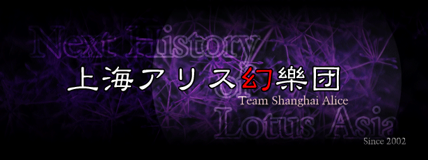

|
 |
|
| よおこそ | |
| 当サークル「上海アリス幻樂団」では、弾幕ＳＴＧを開発したり音楽を作成したりなサークルです。入場したい場合、上の画像をクリックしてくださいリンクを張る場合は必ずこの
http://www16.big.or.jp/~zun/ にお願いします。 当ペエジは、横解像度800以上、Internet Explorer 4.0 以上で見ることを想定しています。リンクはご自由にお願いいたします。 バナアは <img src="http://www16.big.or.jp/~zun/image/banner.gif" width=200 height=40> とかお書き下さい。 |
|